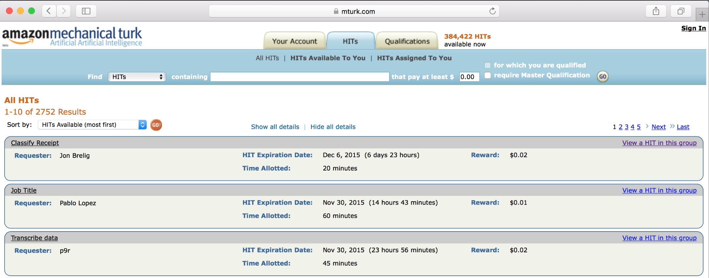
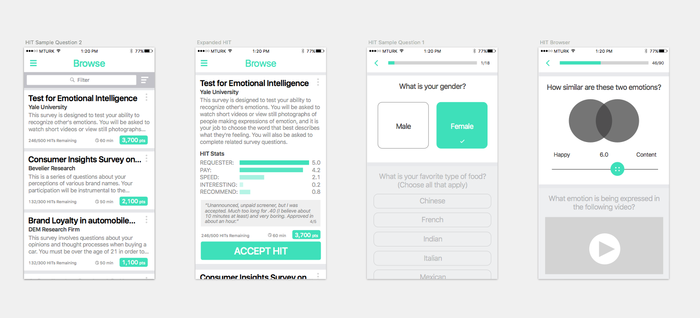
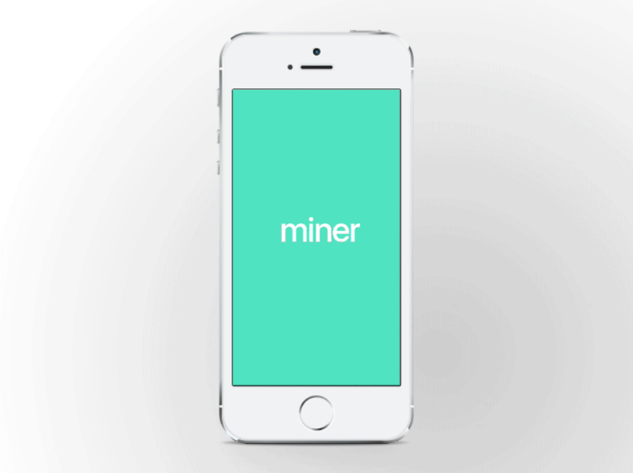

MINER
A MOBILE REDESIGN CONCEPT OF AMAZON MTURK
Amazon MTurk is an online platform that allows researchers (Requesters) to request crowdsourced solutions to various tasks (completed by Workers). This side project sought to imagine what a mobile-first re-design of MTurk might look like. This project somehow led me to join the Stanford Crowd Research Collective, a worldwide group of researchers led by Michael Bernstein in Stanford CS, to help build the next generation crowdsourcing marketplace.
THE IMPORTANCE OF MOBILE-FIRST IN CROWDSOURCING
Mobile browsing of digital media is growing rapidly in the 21st century, and has now surpassed desktop usage (KPCB Internet Trends, 2015). The average American spends 2.8 hours a day browsing digital media on a mobile device, and 2.4 on a desktop/laptop. Mobile usage has grown over 9 times since 2008 (KPCB Internet Trends, 2015), and seems to still be on the rise. How does MTurk fare in terms of mobile support?
MTURK IS NOT MOBIL E FRIENDLY
A lack of mobile-first design precludes a Worker's ability to do many types of tasks on MTurk in that free time. According to a survey that I conducted (80 participants, online survey), 69% of participants used MTurk on laptops, only 5% using smartphones. However, 47% reported at times wanting to use MTurk, but being unable to due to lack of laptop. If a mobile version of MTurk existed, 76% of participants said that they would use it, and 41% participants said they would prefer a mobile client over a laptop client.
The user interface is certainly not optimized for mobile usage:

88% of Workers agreed that the UI could be improved. Many tasks on MTurk are extremely tedious and boring; this is exacerbated by the lack of satisfying visual and interactive feedback. MTurk workers reported being bored 45% of the time, and start clicking randomly due to boredom 15% of the time.
REIMAGINING MTURK FOR MOBILE
I imagined a mobile interface with the following characteristics:
- A more visually appealing interface with satisfying interactive feedback, including a more user friendly way to respond to questions
- Statistics about requesters and HITs clearly presented
- A way to better inform Workers what a HIT entails
- A better way to filter for HITs
PROTOTYPES
The following prototypes were created in Sketch and Pixate
 